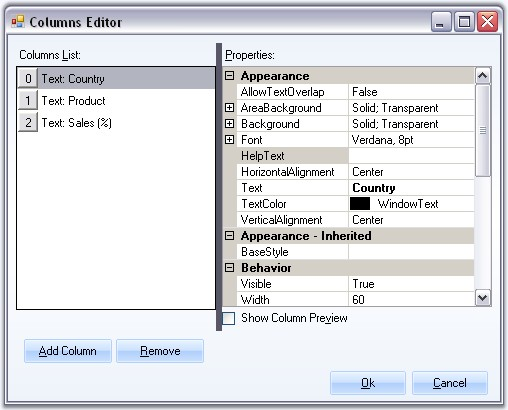
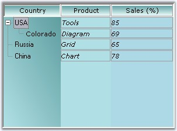

Adding Multiple Columns
MultiColumnTreeView control lets you add multiple columns easily using Columns Editor. The SubItems can be added using the SubItems Collection Editor. There are also properties to modify the appearance of the columns.

Figure 1177: Columns Editor
This dialog can be accessed using the context menu of the control or the command available at the bottom of the property grid. The context menu also lets you add columns directly using "Add Column".
Customizing the columns using Columns Editor
The below properties can be used to customize the columns.
|
TreeColumnAdv Properties |
Description |
|
AllowTextOverlap |
Indicates whether the text can overlap or not. By default it false. |
|
Background |
Sets the background for the column (column header). |
|
Font |
Sets the foreground style for the columns. |
|
HelpText |
Sets the help text for the columns. |
|
HorizontalAlignment |
Sets the horizontal alignment of the text in the columns. |
|
Text |
Sets text for the columns. |
|
TextColor |
Sets the text color for the columns. |
|
Vertical Alignment |
Sets the vertical alignment of the text in the columns. |
|
BaseStyle |
Sets the base style to be applied to the column. |
|
Visible |
Sets the visibility of the particular column. |
|
Width |
Specifies Column width. |
|
Border3DStyle |
Sets the 3D border style for the column. |
|
BorderColor |
Border color for the column. |
|
BorderSides |
Specifies the sides of the column which should have border. |
|
BorderStyle |
Sets 2D or 3D border. The options are,
· FixedSingle and · Fixed3D. |
|
BorderSingle |
Specifies the 2D border style for the columns, when BorderStyle is set to Fixed Single. The options are,
· Dotted, · Dashed, · Solid, · Inset and · Outset. |
|
Comparer |
Comparative value for sorting. |
|
SortOrder |
Specifies the sort order for the column. |
|
LeftImage |
Sets the left image for the column. |
|
LeftImageIndices |
Specifies the left image index. |
|
RightImageIndices |
Specifies the right image index. |
|
LeftImagePadding |
Sets the padding of the left image. |
|
RightImagPadding |
Sets the padding of the right image. |
|
RightImage |
Sets the right image for the column. |
 Note: The TreeColumnAdv1.Background settings
overrides the MultiColumnTreeView.ColumnsHeaderBackground
property settings for individual column headers.
Note: The TreeColumnAdv1.Background settings
overrides the MultiColumnTreeView.ColumnsHeaderBackground
property settings for individual column headers.
Painting the Column Area
|
TreeColumnAdv Property |
Description |
|
AreaBackground |
Gets / sets the background for the column area. |
|
[C#]
treeColumnAdv1.AreaBackground = new Syncfusion.Drawing.BrushInfo(Syncfusion.Drawing.GradientStyle.BackwardDiagonal, System.Drawing.Color.CadetBlue, System.Drawing.Color.PowderBlue); treeColumnAdv1.Background = new Syncfusion.Drawing.BrushInfo(Syncfusion.Drawing.GradientStyle.Vertical, System.Drawing.Color.CadetBlue, System.Drawing.Color.Azure);
treeColumnAdv2.AreaBackground = new Syncfusion.Drawing.BrushInfo(System.Drawing.Color.PowderBlue); treeColumnAdv2.Background = new Syncfusion.Drawing.BrushInfo(Syncfusion.Drawing.GradientStyle.Vertical, System.Drawing.Color.CadetBlue, System.Drawing.Color.Azure);
treeColumnAdv3.AreaBackground = new Syncfusion.Drawing.BrushInfo(System.Drawing.Color.LightBlue); treeColumnAdv3.Background = new Syncfusion.Drawing.BrushInfo(Syncfusion.Drawing.GradientStyle.Vertical, System.Drawing.Color.CadetBlue, System.Drawing.Color.Azure); |
|
[VB.NET]
treeColumnAdv1.AreaBackground = New Syncfusion.Drawing.BrushInfo(Syncfusion.Drawing.GradientStyle.BackwardDiagonal, System.Drawing.Color.CadetBlue, System.Drawing.Color.PowderBlue) treeColumnAdv1.Background = New Syncfusion.Drawing.BrushInfo(Syncfusion.Drawing.GradientStyle.Vertical, System.Drawing.Color.CadetBlue, System.Drawing.Color.Azure)
treeColumnAdv2.AreaBackground = New Syncfusion.Drawing.BrushInfo(System.Drawing.Color.PowderBlue) treeColumnAdv2.Background = New Syncfusion.Drawing.BrushInfo(Syncfusion.Drawing.GradientStyle.Vertical, System.Drawing.Color.CadetBlue, System.Drawing.Color.Azure)
treeColumnAdv3.AreaBackground = New Syncfusion.Drawing.BrushInfo(System.Drawing.Color.LightBlue) treeColumnAdv3.Background = New Syncfusion.Drawing.BrushInfo(Syncfusion.Drawing.GradientStyle.Vertical, System.Drawing.Color.CadetBlue, System.Drawing.Color.Azure) |

Figure 1178: Background for Column Headers and Area Background for the MultiColumns
Note: The appearance of the columns can also
be controlled using the standard column
styles settings. This overrides the above
settings.